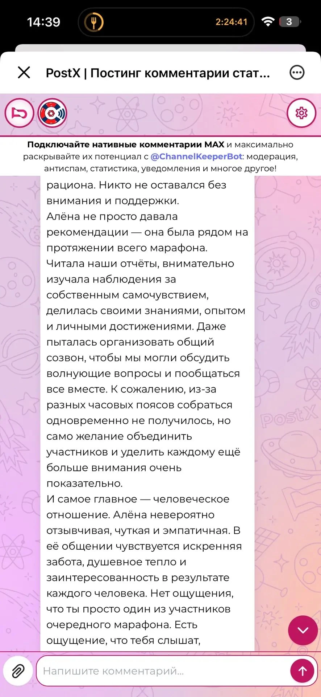

ГАЛЕРЕЯ ЖИВЫХ ИСТОРИЙ
Слова, которые
остаются.
Здесь говорят участники. Их сообщения — о поддержке, понимании и собственном пути. Имена и фотографии в скриншотах закрыты.
Написать Алёне в MAXДНЕВНИК ХИЩНИЦЫ · ХАРАКТЕР И ВКУС
Каждая история —
чья-то жизнь.




Скриншоты настоящих сообщений: имена, аватары и отдельные личные сведения закрыты непрозрачными плашками. Опыт каждого человека индивидуален.
НА СВОЕЙ СТОРОНЕПора написать
Написать в MAX Пора написать
свою историю.
Расскажите о своём запросе. Вместе выберем следующий шаг.